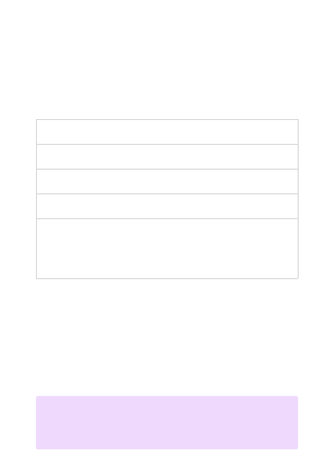

Azure OpenAI Service models
Article • 05/11/2023
Azure OpenAI provides access to many different models, grouped by family and
capability. A model family typically associates models by their intended task. The
following table describes model families currently available in Azure OpenAI. Not all
models are available in all regions currently. Refer to the model capability table in this
article for a full breakdown.
Model
family
Description
A set of models that improve on GPT-3.5 and can understand as well as generate
natural language and code. These models are currently in preview.
A series of models that can understand and generate natural language. This
includes the new ChatGPT model (preview).
A series of models that can understand and generate code, including translating
natural language to code.
Embeddings A set of models that can understand and use embeddings. An embedding is a
special format of data representation that can be easily utilized by machine
learning models and algorithms. The embedding is an information dense
representation of the semantic meaning of a piece of text. Currently, we offer three
families of Embeddings models for different functionalities: similarity, text search,
and code search.
Each model family has a series of models that are further distinguished by capability.
These capabilities are typically identified by names, and the alphabetical order of these
names generally signifies the relative capability and cost of that model within a given
model family. For example, GPT-3 models use names such as Ada, Babbage, Curie, and
Davinci to indicate relative capability and cost. Davinci is more capable and more
expensive than Curie, which in turn is more capable and more expensive than Babbage,
and so on.
Model capabilities
７
Note
Any task that can be performed by a less capable model like Ada can be performed
by a more capable model like Curie or Davinci.